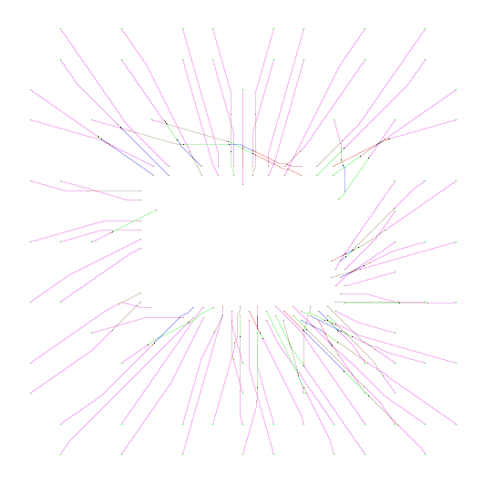
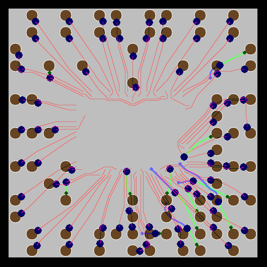
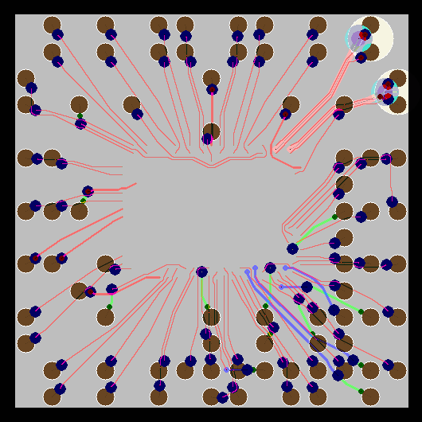
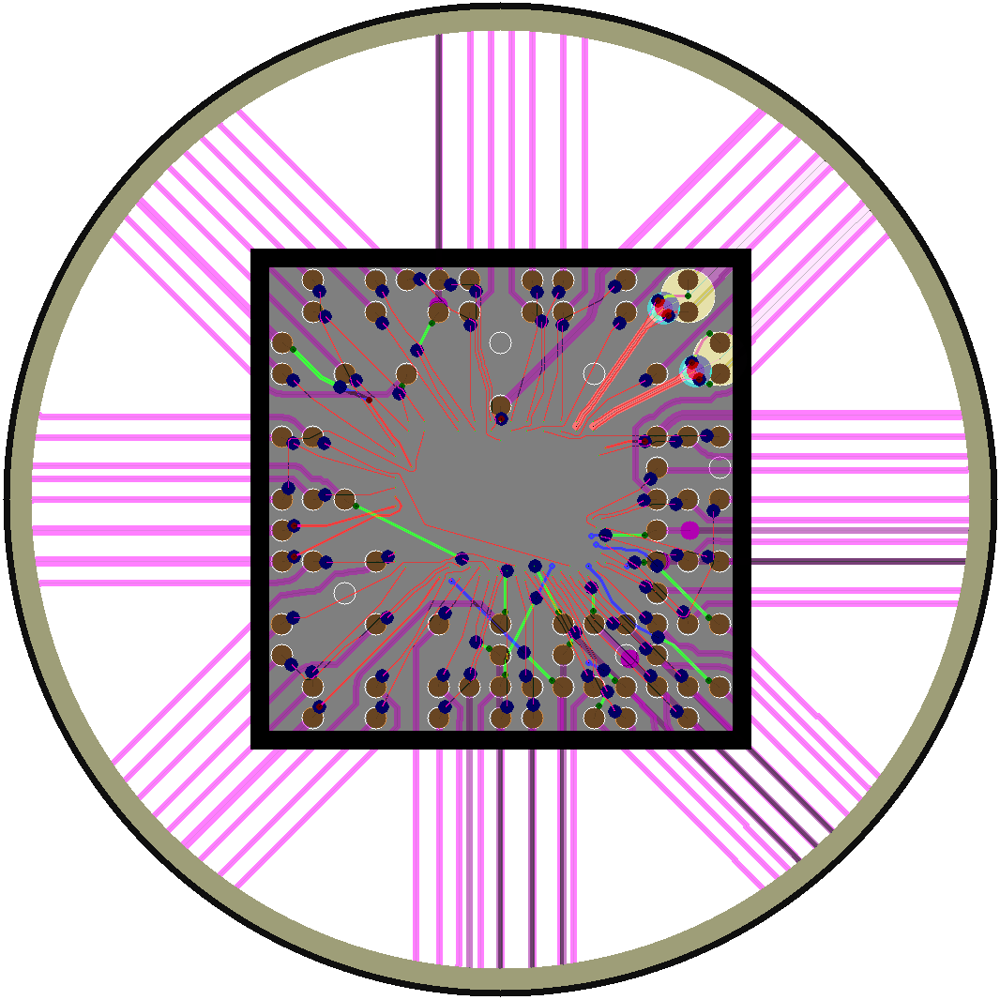

Acorn Examples
The Acorn GitHub repository contains hundreds of
test-cases in the
tests directory. Among these cases,
the following are especially instructive as examples for your own work.
Name of Acorn
Input File
(hyperlinked)
| Description
| Thumbnail
|
80n_16mmX16mm_5L_15um_res_minimal_example.txt
|
Four-layer package substrate with 80 nets. This simple case uses default design
rules, and contains no differential pairs, pin-swap zones, or high-cost routing
zones. It takes only a few minutes to complete on a modern laptop with multiple
cores.
|

|
80n_16mmX16mm_5L_15um_res_example1.txt
|
Four-layer package substrate with 80 nets, similar to the above case
(80n_16mmX16mm_5L_15um_res_minimal_example.txt). However, the
current case includes realistic design rules in addition to keep-out zones
that define the perimeter of a square package with 8-millimeter sides.
Keep-out zones also define the locations of BGA sites, which are visible
in the thumbnail at right as large circles. Cost-zones are used to
encourage the autorouter to primarily use one layer ('Pkg_M1') for most
of the routing. This routing is colored red in the thumbnail image.
|

|
80n_16mmX16mm_5L_15um_res_example2.txt
|
Four-layer package substrate with 80 nets, similar to the above case
(80n_16mmX16mm_5L_15um_res_example1.txt). However, the
current case includes four nets that are part of differential pairs.
These are visible in the upper-right corner of the thumbnail to the
right. One of these pairs is defined as P/N-swappable, which allows
the autorouter to avoid the type of wire-crossing that's visible
in the other differential pair. Finally, this design includes
net-specific design rules, resulting in wider traces for selected
nets.
This case takes approximately a half hour to complete on a modern
laptop with multiple cores.
|

|
80n_16mmX16mm_6L_15um_res_example3.txt
|
Four-layer package substrate with 80 nets, similar to the above case
(80n_16mmX16mm_5L_15um_res_example2.txt). However, the
current case includes two PCB layers and ring-shaped 'swap-zones'
on both of these layers. Because all the nets' terminals are located in
this circular swap-zone (yellow circular ring, in the thumbnail at
right), this case acts as an escape-routing exercise, in which Acorn
attempts to optimize the BGA map and PCB routing to route the nets
from the die through the package and beyond the shadow of the package
on the PCB.
This case illustrates the use of design-rule zones to limit the routing
in certain regions. The case further uses design-rule zones to
restrict the directions of traces to 45° angles on the PCB layers.
This case takes approximately 3 hours to complete on a modern laptop
with multiple cores.
|

|
|
|

|